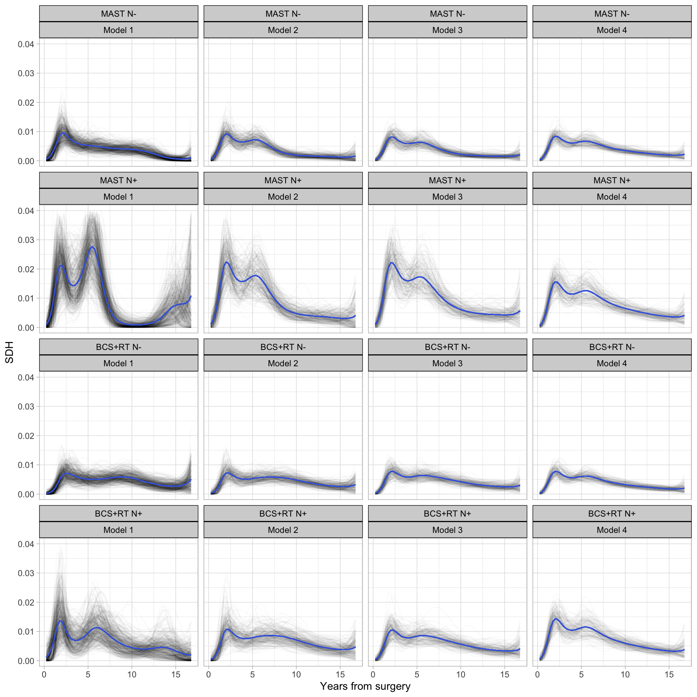
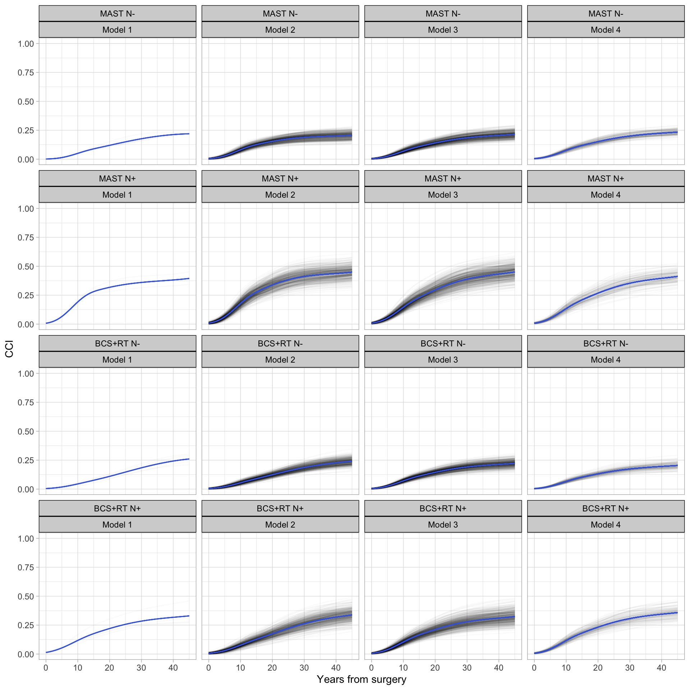
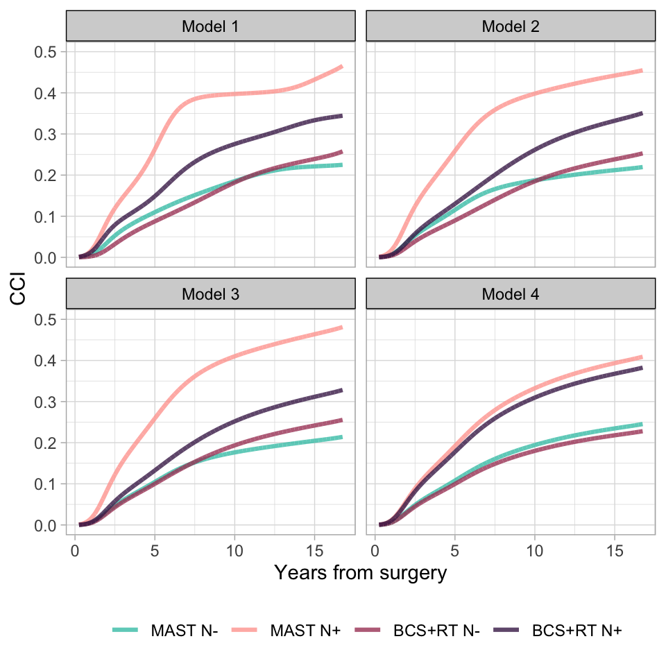

Exploring complex effects in modeling instantaneous rates and cumulative probabilities: an application with distant breast cancer recurrences data
Giacomo Biganzoli, Giuseppe Marano, Patrizia Boracchi
Department of Biomedical and Clinical Sciences (DIBIC) & DSRC, Ospedale “L. Sacco” LITA campus - Università degli Studi di Milano
Motivating example: a clinical question on Milan 1
How the different treatment approaches compares in preventing distant metastases?
In Milan 1 (Mi1) (30 years of follow-up; 193 DMs): radical mastectomy (MAST; 349 patients) vs breast conserving surgery with radiotherapy (BCS+RT; 351 patients)
The effect of treatment (T) on the risk of distant metastases may differ depending on the status of axillary involvement (N) (modification effect) and that it should not be constant through the overall follow-up time (time-dependent effects)
The clinical query was formulated and already discussed at ESMO breast cancer conference in Berlin[1]
The analysis of time-to-event data in the presence of competing risks
Competing event prevent the observation/interpretation of Distant metastases
The relationship between SDH and CCI
Crude cumulative incidence (CCI) is the quantity of theoretical interest and practical application
\[ CCI_{k} = P(T\le t| D = k) \qquad(1)\]
The sub-distribution hazard (SDH) dispalys the instantaneous rate of occurrence of an event (i.e., the intensity of the process) over time
\[ \lambda^{sd}_{k}(t)= \lim_{\Delta t\to0}\frac{P(t \le T < t + \Delta t, D = k | T \ge t \cup(T < t \cap K \neq k ))}{\Delta t} \qquad(2)\]
And it is directly linked to CCI: \[CCI_{k}(t)= 1-e^{-\int_{0}^{u}\lambda^{sd}_{k}(u)du} \qquad(3)\]
Two alternative way to estimate CCI
Highly flexible SM that smooths the shape of the underlying sub-distribution hazard function to then obtain CCI estimates via numeric integration
Pseudovalues calculated on CCI
B-splines to smooth the baseline of the SDH function or the CCI function
Modeling SDH: The discrete-time SDH model
- Time is divided in intervals of 3 months
- Depending on the status of the subjects in each time intervals some weights are computed
- For subjects that experience the event of interest or that experience a censoring event first the weights are definted as: \[w_{i,t} := I(t \le \tilde{T}_{i}) \qquad(4)\] \[ w_{i, 1},w_{i, 2}...w_{i, \tilde{T_{i}}}, w_{i, ( \tilde{T_{i}}+1)},...w_{i, (k-1)} = (1,1,...1,0,...0) \qquad(5)\]
- For subjects that experience another event only, or experience it before that of interest, weights are definted as: \[w_{i,t} := \frac{\hat{G}(t-1)}{\hat{G}(\tilde{T}_{i}-1)},\:\tilde{T}_{i}<t\le k-1 \qquad(6)\]
Here \(\hat{G}\) is an estimate of the censoring survival function \(G(t) = P(C_{i}>t)\)
- The estimation of the SDH is performed with a weighted ML estimation scheme for binary regression with a log link
Modeling CCI: The transformation model on pseudovalues computed on CCI
- Pseudo-observations are computed on crude cumulative incidence at 10 different time-points of the FU for each subject
\[ \hat{\theta_{i}} = n \cdot \hat{\theta} - (n -1) \cdot \hat{\theta}^{i-1} \qquad(7)\] Here, \(\theta = E(f(X)) = CCI_{k}\)
- Pseudo-observation considered as response in a generalized linear model framework, with a gaussian family of the error distribution and a log function to link the linear predictor to the response
- The within-subject correlation should be accounted with generalised estimating equations (GEE) to give correct estimates of the standard errors (❗linear predictors among GLM and GEE do not change, only the standard errors)
- The exponentiated coefficients and their 95% confidence intervals give directly estimates of relative risk and its 95% confidence intervals
Question
Discrete model on SDH describes the relative effect of covariates on the subdistribution hazard function which is directly related to CCI.
The covariates in this model interpreted as having an effect on CCI.
Does complex effects found in modeling SDH translate directly in CCI?
Comparison between the robustness of the effects found in modeling SDH or CCI
Non-parametric bootstrap plan
Model 1: \(log(Y)= \Psi\textbf{B}_{0}+ X_{T}\beta_{1}+ X_{N}\beta_{2}+ X_{T}\times X_{N} \beta_{3}\\ + X_{T}\otimes\Psi \textbf{B}_{4}+X_{N}\otimes\Psi \textbf{B}_{5}+X_{T}\times X_{N} \otimes \Psi\textbf{B}_{6}\)
Model 2: \(log(Y)= \Psi\textbf{B}_{0}+ X_{T}\beta_{1}+ X_{N}\beta_{2}+ X_{T}\times X_{N} \beta_{3} + X_{T}\otimes\Psi \textbf{B}_{4}\)
Model 3: \(log(Y)= \Psi\textbf{B}_{0}+ X_{T}\beta_{1}+ X_{N}\beta_{2}+ X_{T}\times X_{N} \beta_{3}\)
Model 4: \(log(Y)= \Psi\textbf{B}_{0}+ X_{T}\beta_{1}+ X_{N}\beta_{2}\)
Y is \(\lambda^{sd}_{1}(t)\) in the SDH modeling framework, or \(CCI_{1}(t)\) in the crude cumulative incidence modeling framework
\(\Psi\) is the smoothing of the baseline function with B-splines term;
\(X_{T}\times X_{N}\) is the term for the interaction between surgical approach and nodal status
\(X_{T}\otimes\Psi\) is the term for the time-dependent effect of surgical approach
\(X_{N}\otimes\Psi\) is the term for the time-dependent effect of nodal status
\(X_{T}\times X_{N} \otimes \Psi\) is the second order interaction term
Results
Among 1000 bootsrap samples, some models in SDH modeling framewrork did not reach convergence (NC) or gave unstable estimates (UE) (fitted probabilities 0 or 1)
| Model structure | Interior knots (B-splines) | NC/UE | % |
|---|---|---|---|
| Model 1 | 4 | 280 | 62.4 |
| Model 1 | 3 | 90 | 20.0 |
| Model 2 | 4 | 30 | 6.7 |
| Model 1 | 2 | 26 | 5.8 |
| Model 1 | 1 | 22 | 4.9 |
| Model 2 | 3 | 1 | 0.2 |
As expected, the highest is the complexity (Model structure and number of interior knots chosen) the highest is the possbility of obtaining unstable estimates or not obtaining convergence
Results
| CCI-Model 1 | CCI-Model 2 | CCI-Model 3 | CCI-Model 4 | Sum | |
|---|---|---|---|---|---|
| SDH-Model 1 | 23 | 199 | 178 | 47 | 447 |
| SDH-Model 2 | 2 | 167 | 45 | 18 | 232 |
| SDH-Model 3 | 0 | 40 | 137 | 0 | 177 |
| SDH-Model 4 | 0 | 14 | 75 | 55 | 144 |
| Sum | 25 | 420 | 435 | 120 | 1000 |
The phenomenon underlying SDH is complex: the less complex the model structure, the less likely it is chosen.
The least chosen model structure when modeling CCI is the one most frequently chosen for SDH.
On original data: number of interior knots of the B-splines (3 for SDH and 1 for CCI); Model 3 for SDH and Model 4 for CCI
On bootstrap samples: number of interior knots of the B-splines (3 for SDH and 1 for CCI); Model 1 for SDH and Model 2-3 for CCI
Results: accounting for within-subject correlation with GEE
| GEE-Model 1 | GEE-Model 2 | GEE-Model 3 | GEE-Model 4 | Sum | |
|---|---|---|---|---|---|
| GLM-Model 1 | 3 | 1 | 10 | 11 | 25 |
| GLM-Model 2 | 20 | 3 | 199 | 198 | 420 |
| GLM-Model 3 | 28 | 8 | 152 | 247 | 435 |
| GLM-Model 4 | 10 | 3 | 1 | 106 | 120 |
| Sum | 61 | 15 | 362 | 562 | 1000 |
To account for the within-subject correlation, an independent working correlation matrix has been chosen (as suggested in literature)
Linear predictor of GLM and GEE are equal; coefficient SE differ
GEE suggest an even simpler model structure for CCI.
Non-monotonicity of the predicted CCI
- It is well known in the literature that predicted CCI with pseudo-observation can lead to functions that are not monotonic as they should be
- in addition, CCI functions estimates should have the constraints to be strictly between 0 and 1
| GLM | GEE | |
|---|---|---|
| Model 1 | 21/25 | 60/61 |
| Model 2 | 38/420 | 12/15 |
| Model 3 | 2/435 | 11/362 |
| Model 4 | 0/120 | 3/562 |
| Sum | 61/1000 | 86/1000 |
Results: variability of the shape of the predicted SDH and CCI functions


Results: Nodal status and treatment arm on distant recurrences


Conclusions
For the same function used to link (log) the response variable with the linear predictor in GLM model, the agreement between final model structures selected by AIC of the sub-distribution hazard and of the crude cumulative incidence is low (weighted Cohen’s Kappa coefficient = 0.23).
Finally, in clinical settings in which proportional sub-distribution hazard are difficult to assume and complex effect of the covariates are expected, if the interest is in exploring complex effect on CCI of an event of interest, researcher should consider to utilize a modeling framework that directly model on CCI, although the point estimates of the CCI is more accurate when obtained by predicted SDH.
To such end, transformation model on pseudo-observations computed on CCI are suggested when the number of event is high relative to the sample size given the plausibility of the estimates (always check!)
In an exploratory aim, perturbation of the data is suggested to assess the robustness of the complex effects biologically and clinically feasible.
Further developments
- Apply constraints to estimate a monotonic CCI function comprised between 0 and 1
- Assess the behavior of less flexible spline bases (such as the truncated power bases of the restricted cubic regression splines) when estimating CCI
- Apply a penalization for the smoothing of the SDH function exploiting penalized splines or GAM smoothing splines.
- Considering a more sofisticated bootstrap plan
Thank you!
📧 Giacomo Biganzoli: giacomo.biganzoli@unimi.it
📂 Slides are available at: https://statisticalsmoothies.github.io
💻 R Code for the non-parametric bootstrap is available at: https://github.com/statisticalsmoothies/statisticalsmoothies
References
- J.P.Fine and R.J.Gray,“A proportional hazards model for the subdistribution of acompeting risk,”Journal of the American Statistical Association, vol. 94, no. 446, pp. 496–509, 1999.
- M.Berger,M.Schmid,T.Welchowski,S.Schmitz-Valckenberg,andJ.Beyersmann,“Subdistributionhazard models for competing risks in discrete time,” Biostatistics, vol. 21, no. 3, pp. 449–466, 2018.
- F.Ambrogi,E.Biganzoli,andP.Boracchi,“Estimates of clinically useful measures in competing risks survival analysis,” Statistics in Medicine, vol. 27, pp. 6407–6425, 2008.
- G.Tutz andL.Pritscher,“Non parametric estimation of discrete hazard functions,”LifetimeDataAnalysis, vol. 2, pp. 291–308, 1996. R.J.Gray,“Hazard rate regression using ordinary non parametric regression smoothers,”JournalofComputa- tional and Graphical Statistics, vol. 5, pp. 190–207, 1996.
- P. Joly, D. Commenges, and L. Letenneur, “A penalized likelihood approach for arbitrarily censored and truncated data: Application to age-specific incidence of dementia.” Biometrics, vol. 5, pp. 185–194, 1998.
- T.Cai,R.J.Hyndman,andM.Wand,“Mixed model-based hazard estimation,”Journal of Computational and Graphical Statistics, vol. 11, pp. 784–798, 2002.
- T.Cai and R.A.;Betensky,“Hazard regression for interval-censored data with penalized spline,”Biometrics, vol. 3, pp. 570–579, 2003.
- J.E.HerndonandF.E.Harrell,“The restricted cubic spline as baseline hazard in the proportionalhazards model with step function time-dependent covariables,” Statistics in Medicine, vol. 14, pp. 2119–2129, 1995.
- V.Sypsa,G.Touloumi,M.Kenward,A.Karafoulidou,andA.Hatzakis,“Statistical models versus machine learning for competing risks: development and validation of prognostic models,” Statistics in Medicine, vol. 20, pp. 3677 – 3694, 2001.
- E.Biganzoli,P.Boracchi,F.Ambrogi,andE.Marubini,“Artificial neural network for the joint modelling of discrete cause-specific hazards,” Artificial Intelligence in Medicine, vol. 37, pp. 119–130, 2006.
- G.Kantidakis,H.Putter,S.Litie`re,andM.Fiocco,“Statistical models versus machine learning for competing risks: development and validation of prognostic models,” BMC Medical Research Methodology, vol. 14, 2023.
- P.S.Rosenberg,“Hazard function estimation using b-splines,”Biometrics,vol.51,pp.874–887,1995.
- H.Akaike,“Information theory and an extension of themaximum likelihood principle.”Proceedings of the Second International Symposium on Information Theory, pp. 267–281, 1973.
CIBB 2023: 18TH CONFERENCE ON COMPUTATIONAL INTELLIGENCE METHODS FOR BIOINFORMATICS & BIOSTATISTICS